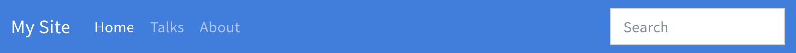
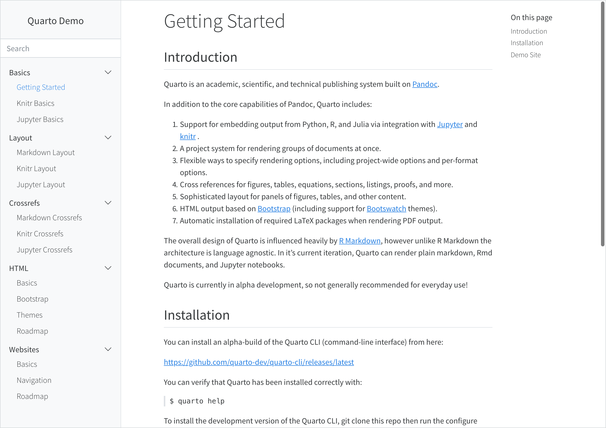
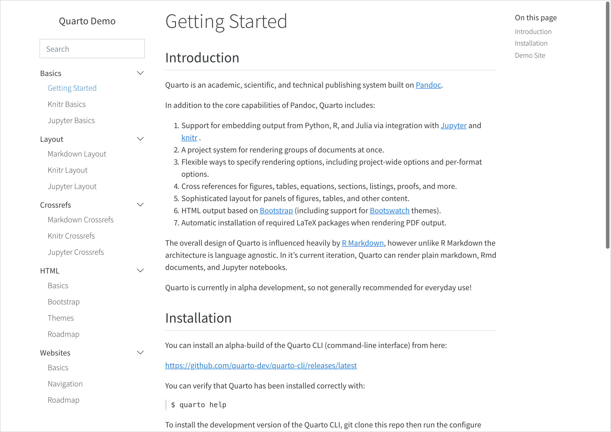
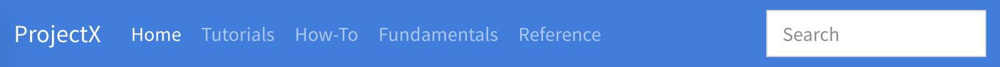

Would result in a navigation bar that looks something like this:

Above we use the left option to specify items for the left side of the navigation bar. You can also use the right option to specify items for the right side.
The text for navigation bar items will be taken from the underlying target document’s title. Note that in the above example we provide a custom text: "Home" value for index.Rmd.
You can also create a navigation menu by including a menu (which is list of items much like left and right). For example:
left:-text:"More"menu:- talks.Rmd- about.Rmd
Here are all of the options available for top navigation:
Option
Description
title
Navbar title (uses the site-title if none is specified).
logo
Optional logo image to be displayed left of the title.
type
“dark” or “light” (each Bootstrap theme has a light and dark variation of the navigation bar)
background
Background color (“primary”, “secondary”, “success”, “danger”, “warning”, “info”, “light”, or “dark”)
search
Include a search box (true or false)
left / right
Lists of navigation items for left and right side of navbar
pinned
Always show the navbar (true or false). Defaults to false, and uses headroom.js to automatically show the navbar when the user scrolls up on the page.
collapse
Collapse the navbar items into a hamburger menu when the display gets narrow (defaults to true)
collapse-below
Responsive breakpoint at which to collapse navbar items to a hamburger menu (“sm”, “md”, “lg”, “xl”, or “xxl”, defaults to “lg”)
Here are the options available for individual navigation items:
Option
Description
file
Link to file contained with the project.
url
Link to external URL.
text
Text to display for navigation item (defaults to the document title if not provided).
icon
Name of one of the standard Bootstrap 5 icons (e.g. “github”, “twitter”, “share”, etc.).
List of navigation items to populate a drop-down menu.
Side Navigation
If your site consists of more than a handful of documents, you might prefer to use side navigation, which enables you to display an arbitrarily deep hierarchy or articles.
If you are reading this page on a desktop device then you will see the default side navigation display on the left (otherwise you’ll see a title bar at the top which you can click or touch to reveal the navigation).
To add side navigation to a website, add a sidebar entry to the website section of _quarto.yml. For example:
There are two styles of side navigation available: “docked” which shows the navigation in a sidebar with a distinct background color, and “floating” which places it closer to the main body text. Here’s that the “docked” and “floating” styles look like (respectively):


Here are all of the options available for side navigation:
Option
Description
id
Optional identifier (used only for hybrid navigation, described below).
title
Sidebar title (uses the project title if none is specified).
subtitle
Optional subtitle
logo
Optional logo image
search
Include a search box (true or false). Note that if there is already a search box on the top navigation bar it won’t be displayed on the sidebar.
tools
List of sidebar tools (e.g. link to github or twitter, etc.). See the next section for details.
footer
Footer content to place immediately below the sidebar.
items
List of navigation items to display (typically top level items will in turn have a list of sub-items).
style
“docked” or “floating”
type
“dark” or “light” (hint to make sure the text color is the inverse of the background)
background
Background color (“none”, “primary”, “secondary”, “success”, “danger”, “warning”, “info”, “light”, “dark”, or “white”). Defaults to “light”.
alignment
Alignment (“left”, “right”, or “center”).
collapse-level
Whether to show sidebar navigation collapsed by default. The default is 2, which shows the top and next level fully expanded (but leaves the 3rd and subsequent levels collapsed).
pinned
Always show a title bar that expands to show the sidebar at narrower screen widths (true or false). Defaults to false, and uses headroom.js to automatically show the navigation bar when the user scrolls up on the page.
Sidebar Tools
In addition to traditional navigation, the sidebar can also display a set of tools (e.g. social actions, github view or edit action, etc…) A basic tool definition consists of an icon name and an href to follow when clicked. For icon, use the icon name of any of the 1,300+ Bootstrap Icons.
If you have a website with dozens or even hundreds of pages you will likely want to use top and side navigation together (where the top navigation links to various sections, each with their own side navigation).
To do this, provide a list of nav-side entries and give them each an id, which you then use to reference them from the nav-top. For example, if you are using the Diátaxis Framework for documentation, you might have separate sections for tutorials, how-to guides, explanations, and reference documents:

Your configuration for this site might look something like this:
You can add various links (e.g. to edit pages, report issues, etc.) to the GitHub repository where your site source code is hosted. To do this, add a repo-url along with one or more actions in repo-actions. For example: